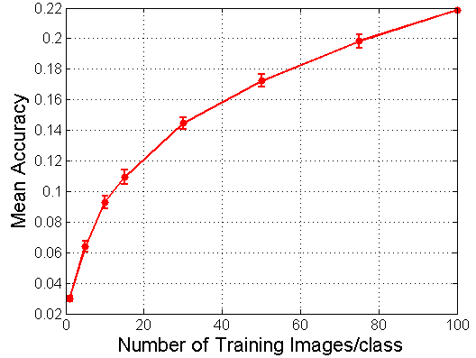
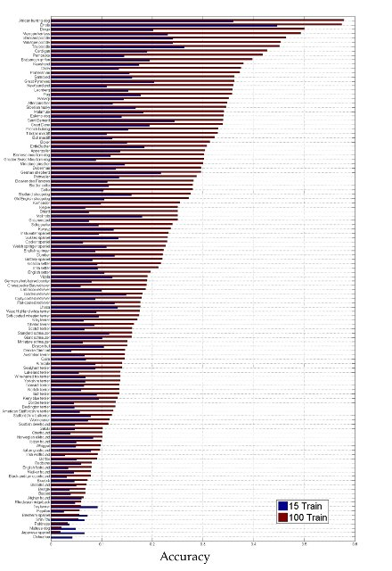

|
The Stanford Dogs dataset contains images of 120 breeds of dogs from around the world. This dataset has been built using images and annotation from ImageNet for the task of fine-grained image categorization. Contents of this dataset:
- Number of categories: 120
- Number of images: 20,580
- Annotations: Class labels, Bounding boxes
Download
You can download the dataset using the links below:
Dataset ReferencePrimary:
Aditya Khosla, Nityananda Jayadevaprakash, Bangpeng Yao and Li Fei-Fei. Novel dataset for Fine-Grained Image Categorization. First Workshop on Fine-Grained Visual Categorization (FGVC), IEEE Conference on Computer Vision and Pattern Recognition (CVPR), 2011. [pdf] [poster] [BibTex]
Secondary:
J. Deng, W. Dong, R. Socher, L.-J. Li, K. Li and L. Fei-Fei, ImageNet: A Large-Scale Hierarchical Image Database. IEEE Computer Vision and Pattern Recognition (CVPR), 2009. [pdf] [BibTex]
|

Baseline Results
This section contains baseline results on two tasks:
- Mean Accuracy
The number of training images per class is varied from 1 to 100.
- Comparison of Accuracy per Class
The accuracy of each class is compared for 15 and 100 training images per class.

Experimental Setting
All of the experiments use image regions from the bounding box only for both training and testing.
The remaining parameters are set to the following values:
- Type of SIFT descriptors: Grayscale
- SIFT patch sizes: 8, 10, 14, 18, 22, 26, 30
- SIFT grid spacing: 4 pixels
- Spatial pyramid: 1*1+2*2+4*4 (3 levels)
- Dictionary Size: 256
- Kernel: histogram intersection kernel
Contact: aditya86@cs.stanford.edu
bangpeng@cs.stanford.edu
| |
{kind=link}